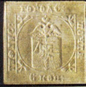
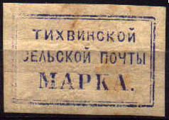
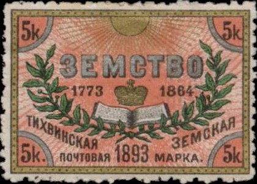

Image found at: http://forum.uuu.ru/viewtopic.php?t=5391. I've been told that this is actually a 'Paris copy' produced for a stamp exhibition in the 1880-90s.
Return To Catalogue - Go to Zemstvos overview - Russia
Note: on my website many of the
pictures can not be seen! They are of course present in the
catalogue;
contact me if you want to purchase it.

Image found at: http://forum.uuu.ru/viewtopic.php?t=5391. I've
been told that this is actually a 'Paris copy' produced for a
stamp exhibition in the 1880-90s.
6 k (very rare)
I don't know if this is an ordinary local stamp or a Zemstvo stamp. This is the first postage stamp in the Russian Empire. Only three stamps have been discovered so far (all unused). A Russian jeweller, Faberge, owned all three of them in 1927 (source: www.vor.ru/culture/cultarch34_eng.html). However, my Senf catalogue of 1938 states that 4 copies exist.

I've been told that this is a reprint.

Forgery



(-) red (-) blue (-) black (1881)
Warning: reprints and forgeries of these stamps exist (I'm not sure if the above shown stamps are genuine).
5 k blue ('Kopeck' written in full in center)
5 k blue (other type)
5 k blue (other type, '5' in four corners)
5 k black and blue (2 types, blue or white shield) 5 k black and red (2 types, red or white shield)

5 k black (on lilac?)
5 k blue

5 k black on lilac

5 k black, blue and red on red 5 k black, blue and red on green
5 k black, blue, red, gold, silver (letters in white) 5 k black, blue, red, gold, silver (letters in gold)
5 k black, blue, red, gold and silver
(reduced size)
5 k black, red, blue, gold and silver
5 k blue, black, green and gold

5 k black, red, green, orange
5 k blue and green (1894) 5 k black, red, lilac and orange (1895) 3 k blue, red and gold (1896) 3 k blue and gold (1896-1897) 3 k blue, lilac and gold (1897-1898) 3 k blue, orange and gold (1898-1899) 3 k black, red, blue and gold (1899-1900) 3 k black, brown, blue and silver (1900-1901) 3 k black, lilac, blue and gold (1901-1902) 3 k black, lilac, blue and gold (1902-1903)


5 k blue (?) k red (1875)
I've seen the red stamp in brown color as well (possibly a proof or decoloration).
Brown stamp

5 k black, yellow, red and brown (exists imperforate)
3 k black, blue, red, yellow and gold 3 k black, blue, red, yellow and gold (smaller size) 3 k black, blue, red and gold 6 k black, blue, red, yellow and gold Surcharged '3' on 6 k black, blue, red, yellow and gold

3 k red, blue, green and yellow
Envelopes of Totma, example:
I have also seen a 4 k red (without the text '3AKA3HOE.', which
means 'Registered').


5 k blue and red
2 k red and blue (with white value, 1872) 2 k red and blue (with blue value, 1871) 2 k red and black (1871)

2 k red, yellow and black

2 k red, blue and gold

2 k brown


{kind=link}
{kind=link}
{kind=link}